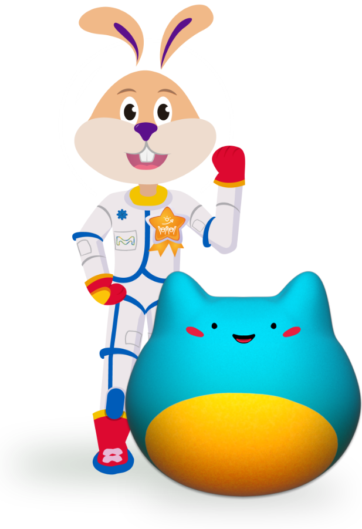
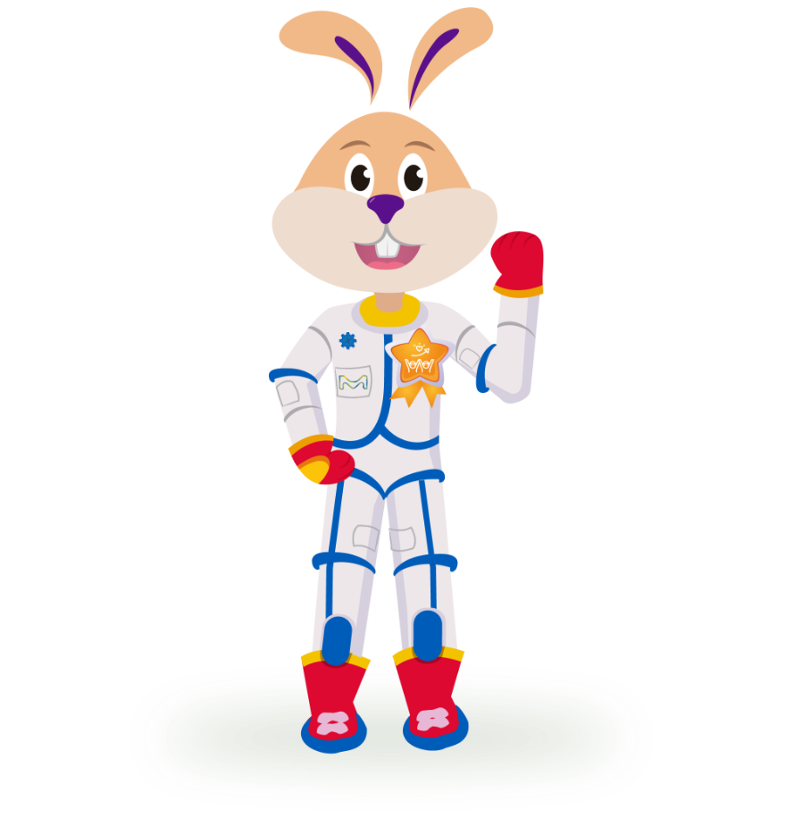
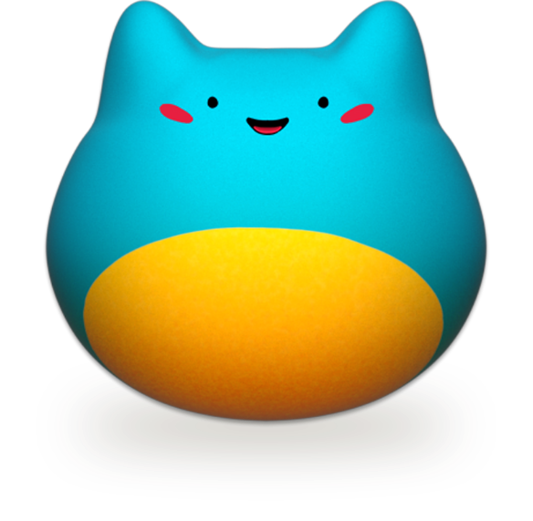
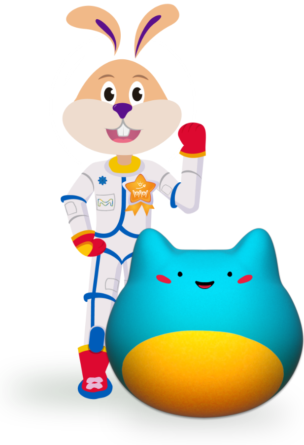
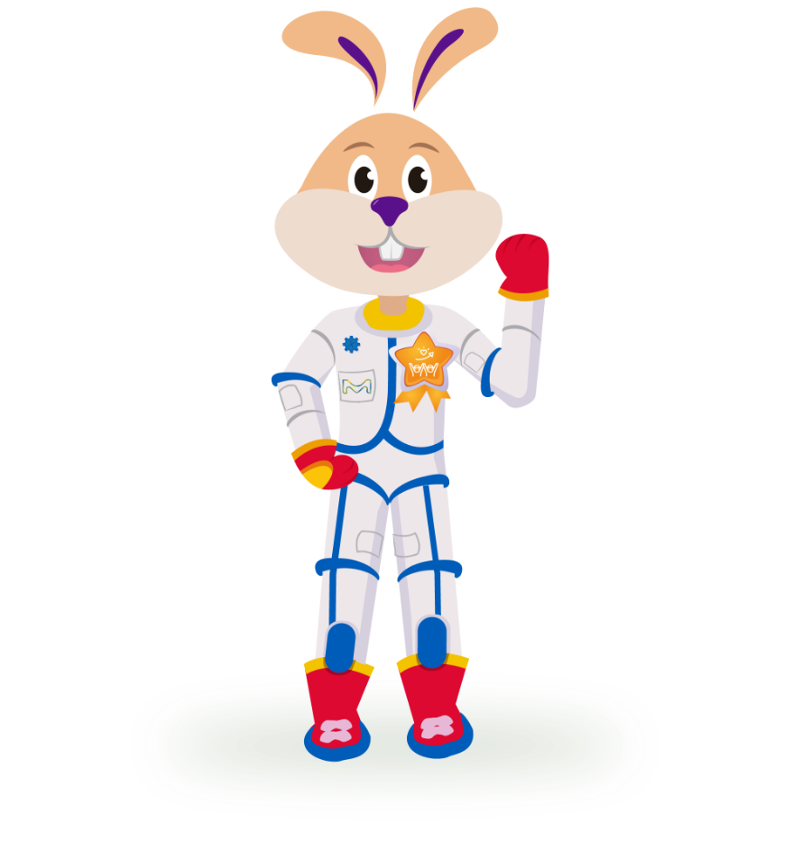
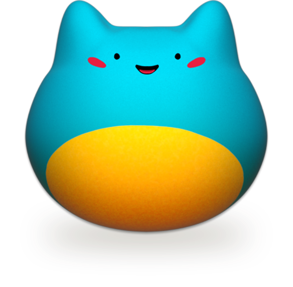

- Bienvenido a Growin, el juego perfecto para aprender jugando sobre la importancia e impacto que todas las actividades de autocuidado tienen en el crecimiento de un niño, niña o adolescente.
- Antes de entrar al mundo Growin, es importante que tú y/o tu padre, madre o tutor lean la siguiente información:
- Growin no sugiere relación alguna entre éste y la eficacia del tratamiento que el paciente se encuentre recibiendo. En otras palabras, la evolución del avatar no tiene relación alguna con su crecimiento en talla o estatura, o evolución clínica como paciente.
- En efecto, el éxito del tratamiento con hormona de crecimiento está sujeto a las características específicas y únicas de cada paciente, su diagnóstico, la edad de inicio del mismo, la adherencia en la administración del medicamento, y el cumplimiento a las instrucciones dadas por el médico tratante; sin que sea posible garantizar un resultado o talla final.
- Cualquier aspecto relacionado al tratamiento y/o a su evolución debe ser discutida directamente con el médico tratante.
- Ahora solo resta que tú y tus padres o tutor revisen las instrucciones de juego, ¡y ya serás parte del mundo Growin!
- Las siguientes instrucciones para el juego también podrán ser detalladas en la sección de configuración del juego.
- INSTRUCCIONES PARA EL JUEGO
- SOBRE EL JUEGO
- Growin es el juego perfecto para divertirte y cuidar de tu propia mascota virtual. Tendrás la responsabilidad de cuidar a tu adorable compañero, y ayudarlo con su crecimiento. Podrás elegir entre dos personajes y personalizarlos a tu gusto; desde su apariencia hasta su ropa, ¡todo está en tus manos!
- Tu objetivo principal será asegurarte que tu avatar esté feliz y sano(a). Tendrás que alimentarlo(a), jugar con el(ella), darle un lugar cómodo para dormir y, por supuesto, darle mucho amor y cariño. Cuanto mejor cuides a tu avatar, más crecerá y se desarrollará.
- ¡La diversión no acaba ahí! En Growin, también podrás explorar emocionantes minijuegos y desafíos. Obtén puntos al completar tareas y desbloquea nuevos accesorios y elementos decorativos para tu avatar y su entorno.
- Growin es un juego diseñado especialmente para niños y niñas desde los 7 años, con controles intuitivos y seguros para que puedas jugar sin preocupaciones. Aprenderás sobre la importancia del cuidado para un crecimiento sano y desarrollarás habilidades de responsabilidad mientras te diviertes y creas recuerdos inolvidables de tu avatar virtual.
- ¿Cómo jugar?
- Ayuda a tu avatar a mantener un nivel de energía saludable de más del 75%. Para lograrlo deberás estar pendiente de las solicitudes que te haga; el avatar te dirá si tiene hambre, sueño, si está enfermo o si desea divertirse.
- Es normal que el avatar disminuya o aumente su nivel de energía, esto permite que haya un balance para su sano crecimiento; al realizar las acciones relacionadas con alimentación, salud y descanso, recargará su nivel de energía para poder jugar, por eso si tienes mucha energía acumulada, ¡será necesario que vayas al módulo de entretenimiento!
- El buen cuidado de tu avatar y otras misiones dentro de Growin te darán puntos que podrás canjear en la tienda. Aquí podrás obtener los artículos que te ayudarán a realizar las acciones que el avatar solicita.
- Los artículos que obtengas serán guardados en el almacén, desde donde podrás brindárselos al avatar.
- ¿Cómo obtener puntos?
-
- Por acciones realizadas para el avatar cuando él las solicita.
- Por superar niveles en los minijuegos del módulo entretenimiento.
- Por mantener al avatar con más de 85% de energía por 1 semana
- Por acciones realizadas por tus padres o cuidadores dentro de la página web: lectura de artículos, uso de la calculadora de crecimiento, etc.
- ¿Cómo obtener los elementos que requiere tu avatar?
- Cuando el avatar te solicite realizar alguna acción, ve al almacén para identificar si hay algún elemento con el cual puedes satisfacer su necesidad y da clic sobre dicho artículo.
- Caso el artículo esté bloqueado (en gris), deberás ir a la tienda y obtenerlo a cambio de puntos que has venido acumulando.
- ¡Esperamos que te diviertas!
- ***
- Las menciones que estas instrucciones hacen a conceptos tales como “desarrollo” o “crecimiento” se encuentran referidas al desarrollo vital de los niños, niñas y adolescentes y no a su crecimiento en talla, estatura o cambio morfológico alguno. Growin no sugiere relación alguna entre las acciones de cuidado promovidas por los avatares y la eficacia del tratamiento que se encuentren recibiendo los pacientes, por lo que nada en éste deberá ser interpretado en ese sentido.
- En efecto, el éxito del tratamiento con hormona de crecimiento está sujeto a las características específicas y únicas de cada paciente, su diagnóstico, la edad de inicio del mismo, la adherencia en la administración del medicamento, y el cumplimiento a las instrucciones dadas por el médico tratante; sin que sea posible garantizar un resultado o talla final. Cualquier aspecto relacionado al tratamiento y/o a su evolución debe ser discutida directamente con el médico tratante.
- La edad mínima indicada para Growin refleja únicamente el nivel de capacidades y/o desarrollo funcional requerido para poder comprender el juego y utilizar sus funcionalidades. Este no implica una recomendación de uso ni posicionamiento alguno respecto a las ventajas o desventajas de la utilización de dispositivos electrónicos por parte de menores de edad; todo lo cual es de exclusiva determinación de los padres o tutores del menor.
- Estas instrucciones están diseñadas para ser leídas por los padres o tutores y/o por el menor junto a aquellos, quienes deberán asegurarse de comprender correctamente qué es Growin (por ejemplo, una herramienta de entretención educativa) y qué no es Growin (por ejemplo, una garantía o sugerencia de que jugándolo o realizando las acciones de cuidado que promueve, el paciente podrá crecer más o mejor en términos de estatura, talla o cualquier cambio morfológico), así como de explicar correctamente a su hijo o pupilo las presentes instrucciones.
- A mayor abundamiento, los padres o tutores son y serán los únicos responsables de la decisión de permitir a su hijo o pupilo utilizar Growin, así como la forma y tiempo por el cual lo hace. Los padres o tutores son libres de determinar si su hijo o pupilo podrá utilizar Growin por sí sólo o acompañado.
- El presente juego se encuentra regido por la Política de Privacidad y Términos y Condiciones de Uso del sitio web, disponibles en el pie de página del website para pacientes.
- ***
-
Garantizo que, en mi calidad de padre, madre o tutor(a) de un menor perteneciente al PSP, he leído íntegramente las presentes instrucciones y mensajes iniciales, todo lo cual he explicado adecuadamente a mi hijo(a) o pupilo(a). Asimismo, acepto y me hago responsable de que mi hijo(a) o pupilo(a) utilice Growin, en la forma y tiempos que yo determine.
Hola,
¡Bienvenido a Growin!
En este juego podrás cuidar de tu avatar virtual.
¡Ayúdalo a crecer sano y fuerte!

La barra de estado tendrá el porcentaje según el bienestar
acumulado al completar los cuidados de cada área.
¡Cuida que tu avatar esté bien en todos los aspectos!
La barra de alimentación se completará mientras tu avatar
consuma más alimentos nutritivos. ¡Aunque de vez en cuando
puede darse un gusto!

La barra de salud se completará mientras tu avatar reciba todos
los cuidados necesarios y se aplique su tratamiento con hormona
de crecimiento.
La barra de descanso se completará mientras tu avatar descanse
las horas recomendadas. ¡Ayúdalo a sentirse más cómodo
mientras duerme!
La barra de entretenimiento se completará mientras tu avatar
juegue el tiempo necesario, ¿a quién no le gusta divertirse?
¡Disfruta de los minijuegos que Growin tiene para ti!
Elige el personaje para tu avatar:
Elige el género para tu avatar:
¿Cómo se llamará tu avatar?: